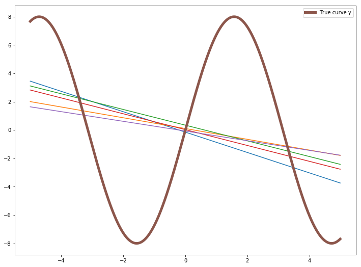

Bias & Variance
Let us train a DNN model for a simple regression problem.
import numpy as np
import matplotlib.pyplot as plt
def dataset(show=True):
X = np.arange(-5, 5, 0.01)
y = 8 * np.sin(X) + np.random.randn(1000)
if show:
yy = 8 * np.sin(X)
plt.figure(figsize=(15,9))
plt.scatter(X, y)
plt.plot(X, yy, color='red', linewidth=7)
plt.show()
return X, y
X, y = dataset(show=True)

Lets train 2 models for this dataset
- a very simple linear model
- a very complex DNN model
Simple Linear Model
We are going to split the dataset into 5 groups(random shuffle) and use each of the 5 groups to train 5 different linear models. We will use sklearn’s StratifiedKFold to split the dataset into 5. Check the docs.
import tensorflow as tf
from tensorflow import keras
import numpy as np
import matplotlib.pyplot as plt
tf.keras.backend.clear_session()
import random
predictions = []
for i in range(5):
idx = random.choices(np.arange(1000), k=700)
X_train, y_train = X[idx], y[idx]
model = tf.keras.Sequential([keras.layers.Dense(units=1, input_shape=[1]) ])
optimizer = tf.keras.optimizers.Adam(lr=0.001)
model.compile(optimizer=optimizer, loss='mean_squared_error')
tf_history = model.fit(X_train, y_train, batch_size=100, epochs=200, verbose=False)
prediction = model.predict(X)
predictions.append(prediction)
plt.figure(figsize=(12,9))
plt.plot(X, predictions[0])
plt.plot(X, predictions[1])
plt.plot(X, predictions[2])
plt.plot(X, predictions[3])
plt.plot(X, predictions[4])
plt.plot(X, 8 * np.sin(X), linewidth=5, label='True curve y')
plt.legend()
plt.show()

Deep Neural Network model
import tensorflow as tf
from tensorflow import keras
import numpy as np
import matplotlib.pyplot as plt
tf.keras.backend.clear_session()
import random
predictions = []
for i in range(5):
idx = random.choices(np.arange(1000), k=100)
X_train, y_train = X[idx], y[idx]
model = tf.keras.Sequential([
keras.layers.Dense(units=50, input_shape=[1]),
keras.layers.Activation('relu'),
keras.layers.Dense(units=50),
keras.layers.Activation('relu'),
keras.layers.Dense(units=1),
])
optimizer = tf.keras.optimizers.Adam(lr=0.001)
model.compile(optimizer=optimizer, loss='mean_squared_error')
tf_history = model.fit(X_train, y_train, batch_size=100, epochs=200, verbose=False)
prediction = model.predict(X)
predictions.append(prediction)
plt.figure(figsize=(12,9))
plt.plot(X, predictions[0])
plt.plot(X, predictions[1])
plt.plot(X, predictions[2])
plt.plot(X, predictions[3])
plt.plot(X, predictions[4])
plt.plot(X, 8 * np.sin(X), linewidth=5, label='True curve y')
plt.legend()
plt.show()

Bias
Bias is defined as $ Bias = E[\hat{y}] - y$
It is the difference between the expected value of prediction and the true curve. The expected value will be calculated by splitting the data into n parts and training n model on those n data parts and average of that n model prediction will be expected value.
You can see the bias for first model will be very high as the model predicts a straight line, but the true curve is sinusoidal. But the bias for 2nd model will be lower than 1st model.
Variance
Variance as you should know defines how much a data is varying. $Variance(\hat{y}) = E[(\hat{y} - E[\hat{y}])^2]$ Although the predictions are not good, but the variance of 2nd model will be higher than 1st model, as the 2nd complex model will try to fit the data more.
| Model | Bias | Variance |
|---|---|---|
| Simple Model | High | Low |
| Very Complex model | Low | High |
Bias-Variance Tradeoff
Let’s do some math first and discuss about it.
Bias-Variance Decomposition
$MSE = E[(y - \hat{y})^2] = E[y^2 - 2.y.\hat{y} + \hat{y}^2]$
here the random variable is $\hat{y}$ as it is dependent on $X$.
$ MSE = y^2 - 2.y.E[\hat{y}] + E[\hat{y}^2]$
$Bias = E[\hat{y}] - y$
$Bias^2 = (E[\hat{y}] - y)^2 = E[\hat{y}]^2 + y^2 - 2yE[\hat{y}]$
$Variance = E[(\hat{y} - E[\hat{y}])^2] = = E[\hat{y}^2] + E[\hat{y}]^2 - 2E[\hat{y} E[\hat{y}]] = E[\hat{y}^2] + E[\hat{y}]^2 - 2E[\hat{y}]^2 = E[\hat{y}^2] - E[\hat{y}]^2$
$Bias^2 + Variance = y^2 - 2.y.E[\hat{y}] + E[\hat{y}^2] = MSE$
$Bias^2 + Variance = MSE$
- when the bias is high(Simple Model), MSE is high, We don’t want high Loss, so we don’t want high bias
- when the variance is high(complex model), again MSE is high, so we don’t want high variance
Conclusion is that we need to choose a model which doesn’t have high bias or high variance, something optimal bias-variance in between will do good.

Underfitting
When a model have high bias, then the model is “Underfitting”. Let’s look at an example first
import numpy as np
import matplotlib.pyplot as plt
def dataset(show=True):
X = np.arange(-5, 5, 0.1)
y = 8 * np.sin(X) + np.random.randn(100)
if show:
yy = 8 * np.sin(X)
plt.figure(figsize=(15,9))
plt.scatter(X, y)
plt.plot(X, yy, color='red', linewidth=7)
plt.show()
return X, y
X, y = dataset(show=True)

import tensorflow as tf
from tensorflow import keras
import numpy as np
import matplotlib.pyplot as plt
tf.keras.backend.clear_session()
from sklearn.model_selection import train_test_split
X_train, X_test, y_train, y_test = train_test_split(X, y, test_size=0.3, shuffle=True)
model = tf.keras.Sequential([keras.layers.Dense(units=1, input_shape=[1]) ])
optimizer = tf.keras.optimizers.Adam(lr=0.001)
model.compile(optimizer=optimizer, loss='mean_squared_error')
tf_history = model.fit(X_train, y_train, batch_size=100, epochs=200, verbose=True, validation_data=(X_test, y_test))
prediction = model.predict(X)
plt.figure(figsize=(12,9))
plt.plot(X, prediction)
plt.plot(X, 8 * np.sin(X), linewidth=5, label='True curve y')
plt.legend()
plt.show()
Train on 70 samples, validate on 30 samples
Epoch 1/200
70/70 [==============================] - 0s 1ms/sample - loss: 33.6902 - val_loss: 41.1840
Epoch 2/200
70/70 [==============================] - 0s 57us/sample - loss: 33.6857 - val_loss: 41.1832
.
.
Epoch 199/200
70/70 [==============================] - 0s 54us/sample - loss: 33.1816 - val_loss: 41.3314
Epoch 200/200
70/70 [==============================] - 0s 59us/sample - loss: 33.1806 - val_loss: 41.3328

You can see the Training data loss and Validation data loss both are bad, the model performance is not good. This is called Underfitting.
Underfitting may happen because the model is not complex enough, or need more training. So, using a deeper network or training for more time may help.
Overfitting
Let’s train a more complex model with less training data.
import tensorflow as tf
from tensorflow import keras
import numpy as np
import matplotlib.pyplot as plt
tf.keras.backend.clear_session()
from sklearn.model_selection import train_test_split
X_train, X_test, y_train, y_test = train_test_split(X, y, test_size=0.9, shuffle=True)
model = tf.keras.Sequential([
keras.layers.Dense(units=50, input_shape=[1]),
keras.layers.Activation('relu'),
keras.layers.Dense(units=50),
keras.layers.Activation('relu'),
keras.layers.Dense(units=1),
])
optimizer = tf.keras.optimizers.Adam(lr=0.001)
model.compile(optimizer=optimizer, loss='mean_squared_error')
tf_history = model.fit(X_train, y_train, batch_size=100, epochs=1000, verbose=True, validation_data=(X_test, y_test))
prediction = model.predict(X_train)
plt.figure(figsize=(12,9))
plt.scatter(X_train, prediction,label='Training Data Prediction')
plt.scatter(X_test, model.predict(X_test), color='r', marker='x', label='Test Data Prediction')
plt.plot(X, 8 * np.sin(X), linewidth=1, label='True curve y')
plt.legend()
plt.show()
Train on 10 samples, validate on 90 samples
Epoch 1/1000
10/10 [==============================] - 0s 14ms/sample - loss: 31.7417 - val_loss: 37.6045
Epoch 2/1000
10/10 [==============================] - 0s 587us/sample - loss: 31.0950 - val_loss: 37.4865
.
.
Epoch 999/1000
10/10 [==============================] - 0s 561us/sample - loss: 0.5722 - val_loss: 17.3321
Epoch 1000/1000
10/10 [==============================] - 0s 497us/sample - loss: 0.5721 - val_loss: 17.3268

Here you can see, although the model is complex and can learn more complex features of the data, the Validation loss is way higher than training loss. This is called Overfitting. This means the model fits the training data so much that it does not generalize and perform very poorly in new unseen data. Adding more data can help to prevent overfitting.